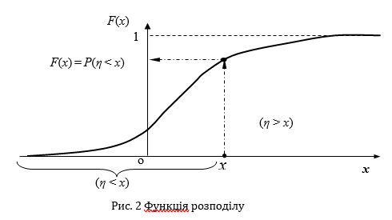
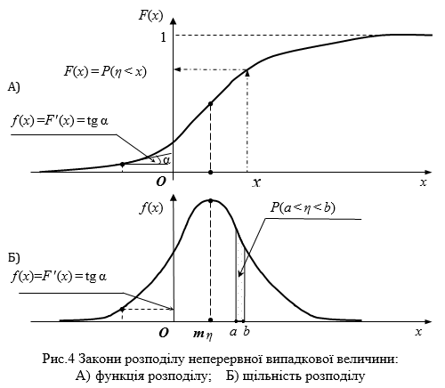
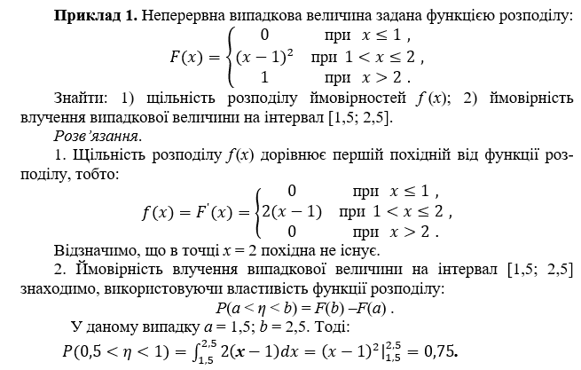
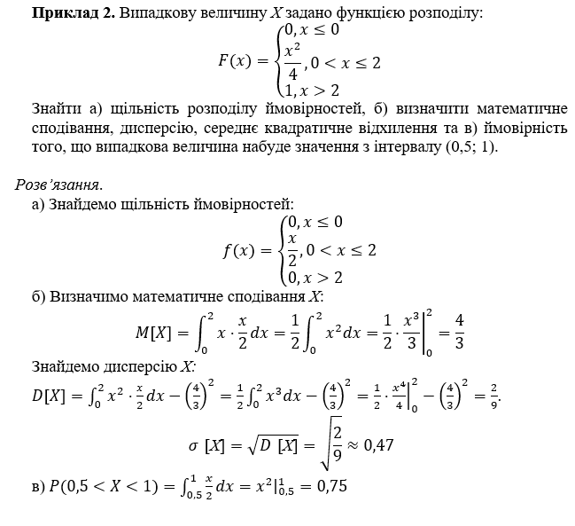

Неперервна випадкова величина. Функція розподілу неперевної випадкової величини
Неперервною випадковою величиною η називається така величина, значення якої безперервно заповнюють деякий проміжок значень.
Наприклад – тривалість людського життя, напруга в побутовій електричній мережі, розмір отриманого чистого прибутку й таке інше.
Неперервна випадкова величина має незліченну множину можливих значень, що не дозволяє побудувати для неї ряд розподілу. У цьому випадку розглядають не ймовірність події виникнення точного значення неперервної випадкової величини, тому що ця ймовірність дорівнює нулю [Р(η = x) = 0], а ймовірність того, що випадкова величина η в результаті спроби набуде такого значення, яке не перевершує заздалегідь заданого (граничного) значення x (див. рис. 2). Тобто, розглядається ймовірність події P(η < x) = F(x), яка полягає в тому, що випадкова величина потрапить на інтервал значень – \(\infty\) < η < x.
Ця ймовірність залежить від величини х, має позначення F(x), існує для всіх неперервних і дискретних випадкових величин і має свою назву – функція розподілу випадкової величини.
Функцією розподілу випадкової величини (синоніми – інтегральна функція розподілу, інтегральний закон розподілу) називається ймовірність того, що значення випадкової величини η у результаті спроби потрапить на інтервал значень – \(\infty\) < η < x:
F(x) = P(η < x). (1)
Загальні властивості функції розподілу:
- значення функції розподілу лежать у границях 0 £ F(x) £ 1;
- функція розподілу F(x) є неспадна функція свого аргументу, тобто при x2 > x1 завжди F(x2) ³ F(x1);
- на мінус нескінченності функція розподілу дорівнює нулю:
F(– \(\infty\) ) = 0;
- на плюс нескінченності функція розподілу дорівнює одиниці:
F(+ \(\infty\)) = 1.
Щільність розподілу неперервної випадкової величини
Якщо випадкова величина η – безперервна, то для неї існує ще одна характеристика – щільність розподілу (див. рис. 3, Б).
Щільністю розподілу f (x) (синоніми – щільність розподілу ймовірностей, щільність ймовірностей, диференціальна функція розподілу, диференціальний закон розподілу) називається перша похідна від функції розподілу F(x):
f (x) = F'(x). (3)
Інтегруючи ліву і праву частини останньої рівності, знаходимо:
\(F(x)=\int_{-\infty}^{x}{f(x)dx.}\) (4 )
Тоді ймовірність влучення неперервної випадкової величини на задану ділянку (див. рис. 3, Б) можна записати так:
\(P(a\le X< b)=\int_{a}^{b}{f(x)dx}=F(b)-F(a)\).
Властивості щільності розподілу випливають із рівності (3) і (4):
- Функція F(x) – є не спадна функція свого аргументу, тому щільність розподілу f (x) є не негативною функцією свого аргументу, тобто вся крива лінія розподілу лежить не нижче осі абсцис:
f (x) \(\ge\) 0.
- Максимальне значення F(x) = 1, тому інтеграл у нескінчених границях від щільності розподілу f (x) дорівнює площі, яка обмежена кривою лінією розподілу і віссю абсцис, і дорівнює одиниці:
\(\int_{-\infty}^{\infty}{f(x)dx=1.}\)

Числові характеристики неперервної випадкової величини
Математичне сподівання M[η] неперервної випадкової величини η, заданої на інтервалі (– \(\infty,\infty\)), позначають M[η] = M(η) = Mη = mη і знаходять за формулою:
\(M[\eta]=\int_{-\infty}^{\infty}xf(x)dx\). (3.11)
Якщо усі значення неперервної випадкової величини η належать інтервалу (a, b), то у формулі (3.11) варто зазначити саме цей інтервал:
\(M[\eta]=\int_a^bxf(x)dx\).
Дисперсія випадкової величини
Для оцінки розкиду значень випадкової величини відносно свого математичного сподівання використовують поняття “дисперсія”.
Дисперсією випадкової величини η (позначають D[η] = Dη) називається математичне сподівання квадрата відхилення випадкової величини від свого математичного сподівання:
\(D[\eta]=\int_{-\infty}^{\infty}[x-M(\eta)]^2f(x)dx=\int_{-\infty}^{\infty}x^2f(x)dx-(M(\eta))^2\).
Дисперсія має розмірність квадрата розмірності випадкової величини, що утрудняє її безпосереднє використання для оцінок. Тому для наочної оцінки величини розкиду значень випадкової величини з дисперсії добувають квадратний корінь. Отримана характеристика називається середнім квадратичним відхиленням випадкової величини η (синоніми – CKВ, стандартне відхилення; позначають σ [η] = σ η ):
\(\sigma[\eta]=\sqrt{D[\eta]}.\)